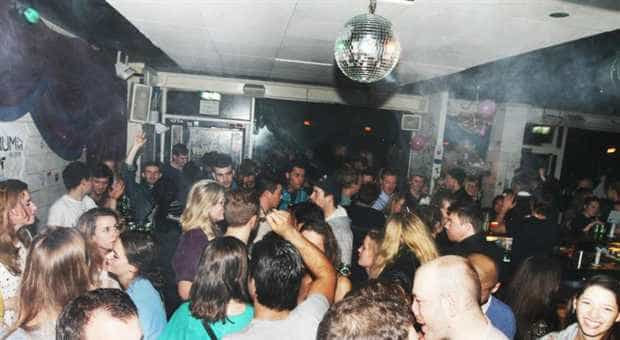
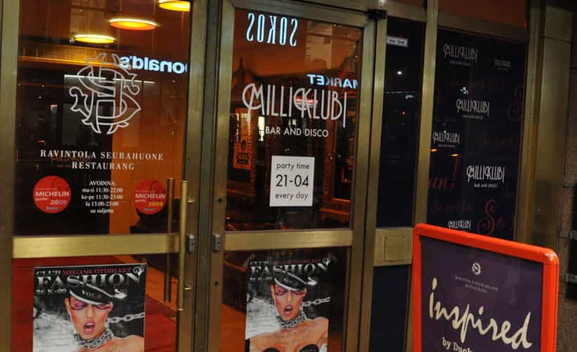

Daryush "Roosh" Valizadeh created ROK in October 2012. You can visit his blog at RooshV.com or follow him on Twitter and Facebook.


I estimate I’ve been to at least 500 bars and clubs in my lifetime, spread across 20 different countries. Some clubs are much easier to get laid than others due to variables like the layout, music, vibe, and culture. Here are the spots I recommend you visit if all you want to do is get laid…
Brazil used to a be a popular place in the 80s and early 90s for American men to visit and get some easy loving from sexy women who were impressed with gringos. Times have changed: Brazil’s economic miracle has created an entire class of snobby girls who rather play on their $1000 iPhones than give love to an American traveler. The top clubs of any major city will be stuffed with amazing talent, but unfortunately they won’t give regular guys passing through much of a chance. You need to find a middle-of-the-road club that has nice girls who are still open to foreigners. In Rio, this place is Casa do Matriz.
Casa, as it’s affectionately known, is a hipster rock club with cuties that don’t mind flings with foreigners. In a country where one-night stands are not exactly easy, you should be able to get one here. Show up on the weekends before 12 to avoid the line, sip on some caipirinhas, and get ready to approach girls who speak English. This is where I met the most beautiful girl I’ve ever had sex with in my life.
Read More: Go To Brazil If You Look Like This Guy
Sweden women are positively portrayed in American media as blonde bombshells (the movie Dumb and Dumber comes to mind), but unfortunately this isn’t the reality on the ground. What you have instead are chubby white girls who are obsessed with the hipster culture and think that wearing Chucks 24-7 is acceptable. The elite clubs have some of the Swedish hotties you probably hope for, but they are constantly surrounded by a social circle full of sniveling beta males hoping to get it in before Christmas. In a short trip you won’t have access to them.
Your best bet if you’re in Gothenburg, Sweden’s second largest city, is Sticky Fingers, a two-floor rock venue that has acceptable Swedish women who are crazy about American men. I’m not exaggerating—once they find out you’re American prepare for an automatic five minute conversation with very little effort on your part. With a bit of game it won’t be hard to translate that interest into unprotected sex.
I like the semi-circle bar upstairs but the main bar downstairs is also good. The key here is not to be shy if a girl is with guys. Unless she’s kissing or touching them, they’re just friends and probably won’t cockblock you when you start a conversation. Hell, he’ll be impressed that you’re American, too.
Read More: The Final Verdict On Swedish Girls

I’ve said it before and I’ll say it again: Danish girls are ugly. Compared to other countries in Scandinavia, Denmark has by far the worst chicks when it comes to appearance and attitude. I don’t know why this is but I strongly suspect inbreeding back from the days of Vikings. Nonetheless, if you find yourself stuck in the capital and still want to get laid, there’s no better place to pull one-night stands than Bakken.
Bakken attracts a large cross-section of the Danish young set, from tattooed freaks to posh girls who don’t care if they spill beer on your suit. The club is dank, cramped, and dark, making it a perfect venue to rub genitals with the opposite sex. There is even a back hallway behind the bar where you can get intimate without your other prospects for the night eyeing you.
There are two bits of advice I can give you if you want to smash: (1) go early on the weekend before the mammoth line develops after 12, especially in summer, and (2) hang by the main bar. There are going to be assholes who try to push you away from a prime bar spot but you have to be firm in staying because it’s there where a nonstop procession of girls will brush against you to get their drink. They even may approach you outright.
Read More: Danish Girls Are The Most Masculine In The World
It took me a while to figure out how to get laid in Iceland. I didn’t understand that the people have a village mentality and don’t want all their business on display to fellow villagers (the entire population of the country is around 350,000 people). While some of the young girls will slobber all over you face in public from not having yet developed a slut concealment mechanism, most girls want to be discrete. They don’t want to be the girl who left her group of friends early to go hook up with a foreigner. So what’s the solution?
Go to Bakkus at 3am, chill for an hour making small talk, and then approach girls in earnest starting around 4am, at a time when girls are splitting from groups. By then they’ll be drunk and looking for a hookup. Ironically the very best time to approach in Iceland is on the weekend at 5am, right when the nightlife shuts down. Ask girls where the afterparty is and don’t be surprised if you spin one at your apartment.
The interesting thing about Bakkus is that before 4am, it’s really hard to get anything that leads to action. Save your energy for the final hour where you can probably score the easiest lay of your life.
Read More: How To Bang Icelandic Girls Using The Afterparty Move
We’re now at the number one spot. Thee easiest club to get laid in the world is…

Fellas, it doesn’t get easier than this. I know no less than three other men who also got one-night stands here. The proof-of-concept test has passed with flying colors. In Helsinki you should just ignore every other night venue if your main goal is to rack up notches.
The funny thing is that Milliklub is just a typical bar with a small dance floor. It’s not obvious that sex will flow freely like Alpine water when you walk in, but soon you’ll notice girls checking you out and approaching. You’ll notice that everyone is getting fucked up. And you’ll notice the amount of grimy dancing and hooking up that goes down on the dance floor. As long as you don’t have high standards, it will be tough to fail here. I recommend starting on Tuesday night when it’s ironically easier than the weekend. Make sure your hotel is close by so you can go for the old nightcap move.
Read Next: The Pill That Cures Approach Anxiety
It’s no surprise that most of the clubs on this list are in Scandinavia. God bless gender equality and the eradication of the slut concept, where girls have absolutely no problems sleeping with foreign men in record time. While clubs in other countries have better looking women (Poland, Estonia, and Croatia immediately come to mind), look no further than Scandinavia if your goal is fast sex. As long as you avoid the snobby clubs and focus on those that have a slight rock vibe to them, you won’t go wrong.